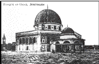

|
| A B C D E F G H I J K L M N O P Q R S T U V W X Y Z |
When Titus took Jerusalem (April-September, A.D. 70) he ordered his soldiers to destroy the city (Josephus, "De bello Jud.", VI, ix). They spared only the three great towers at the north of Herod's palace (Hippicus, Phasael, Mariamne) and the western wall. Few Jews remained. The Roman Tenth Legion held the upper town and Herod's castle as a fortress; Josephus says that Titus handed the fields around to his soldiers ("Vita", 76). The presence of these heathens would naturally repel Jews, though in this period there was no law against their presence in Jerusalem. The Jewish Rabbis gathered together at Jabne (or Jamnia, now Jebna) in the plain, northwest of the city, two hours from Ramleh.
Meanwhile the Christian community had fled to Pella in Paraea, east of the Jordan (southeast of Jenin), before the beginning of the siege. The Christians were still almost entirely converts from Judaism (Eusebius, Church History IV.5). After the destruction they came back and congregated in the house of John Mark and his mother Mary, where they had met before (Acts 12:12 sq.). It was apparently in this house that was the Upper Room, the scene of the Last Supper and of the assembly on Pentecost. Epiphanius (d. 403) says that when the Emperor Hadrian came to Jerusalem in 130 he found the Temple and the whole city destroyed save for a few houses, among them the one where the Apostles had received the Holy Ghost. This house, says Epiphanius, is "in that part of Sion which was spared when the city was destroyed" — therefore in the "upper part ("De mens. et pond.", cap. xiv). From the time of Cyril of Jerusalem, who speaks of "the upper Church of the Apostles, where the Holy Ghost came down upon them" (Catech., ii, 6; P.G., XXXIII), there are abundant witnesses of the place. A great basilica was built over the spot in the fourth century; the crusaders built another church when the older one had been destroyed by Hakim in 1010. It is the famous Coenaculum or Cenacle — now a Moslem shrine — near the Gate of David, and supposed to be David's tomb (Nebi Daud).
During the first Christian centuries the church at this place was the centre of Christianity in Jerusalem, "Holy and glorious Sion, mother of all churches" (Intercession in "St. James' Liturgy", ed. Brightman, p. 54). Certainly no spot in Christendom can be more venerable than the place of the Last Supper, which became the first Christian church. The constant use of the name Sion for the Coenaculum has led to considerable discussion as to the topography of Jerusalem. Many writers conclude that it is on Mount Sion, which would therefore be the southwest hill of the city (Meistermann, "Nouveau Guide de Terre Sainte", Paris, 1907, p. 121, plan). Others (Baedeker, "Palaestina u. Syrien", 6th ed., 1904, p. 27) oppose this tradition on the strength of the passages in the Old Testament that clearly distinguish Sion from Jerusalem and state that the Lord dwells in Sion and that the king's palace is there (Isaiah 10:12; 8:18; Joel 3:21; etc.). So Sion would be the hill on the west, the place of the Temple and David's palace. It was that later the name Sion began to be used for all Jerusalem. Josephus never uses it at all; already in the Old Testament the way was prepared for this extended use. Jerusalem is the "daughter of Sion" (Jeremiah 6:2, etc.). All its inhabitants without distinction are "Sion" (Zechariah 2:7, etc.). In early Christian times Sion seems to have lost its spell, meaning as one definite hill, and to have become merely another name for Jerusalem. Naturally then they called their centre there by the name of the city, although it did not stand on the original Mount Sion. The pilgrim Etheria (Silvia) at the turn of the fourth century, always speaks of the Coenaculum as Sion, just as the Holy Sepulchre is always Anastasis.
From this Coenaculum the first Christian bishops ruled the Church of Jerusalem. They were all converts from Judaism, as were their flocks. Eusebius (Church History IV.5) gives the list of these bishops. According to a universal tradition the first was the Apostle St. James the Less, the "brother of the Lord". His predominant place and residence in the city are implied by Galatians 1:19. Eusebius says he was appointed bishop by Peter, James (the Greater), and John (II, i). Naturally the other Apostles when they were at Jerusalem shared the government with him (Acts 15:6, etc.; Eus., "Hist. Ecclesiastes", II, 23). He was thrown from a rock, then stoned to death by the Jews about the year 63 (Eusebius, ib.; Josephus, "Antiq. Jud.", XX, ix, 1; ed. cit., p. 786). After his death the surviving Apostles and other disciples who were at Jerusalem chose Simeon, son of Cleophas (also called Our Lord's brother, Matthew 13:55), to succeed him. He was bishop at the time of the destruction (70) and probably then went to Pella with the others. About the year 106 or 107 he was crucified under Trajan (Eusebius, Church History III.32). The line of bishops of Jerusalem was then continued as follows:
Even as late as 325 (Nicaea I, can. vii) the city is still called only Ælia. The name lasted on among the Arabs in the form Iliya till late in the Middle Ages. As the rank of the various sees among themselves was gradually arranged according to the divisions of the empire, Caesarea became the metropolitan see; the Bishop of Ælia was merely one of its suffragans.
The bishops from the siege under Hadrian (135) to Constantine (312) were:
During the episcopate of Macarius a great change came to the whole empire that incidentally affected the See of Jerusalem profoundly. The Christian Faith was acknowledged as a religio licita and the Church became a recognized society (Edict of Milan, Jan., 313). At Constantine's death (337) Christianity had become the religion of the Court and Government. As a natural result the Faith spread very rapidly everywhere. The same generation that had seen Diocletian's persecution now saw Christianity the dominant religion and the old paganism gradually reduced to country villages and out-of-the-way towns. There was then a great movement of organization among Christians; churches were built everywhere. A further result of the freedom and the dominance of Christianity was a revival of enthusiasm for the holy places where the new religion had been born, where the events that everyone now read about or heard of in sermons had taken place. Already in the fourth century, there began those great waves of pilgrimage to the Holy Land that have gone on ever since. It was in the fourth century that the Bordeaux pilgrim and Etheria made their famous journey thither (Peregrinatio Silviae). St. Jerome (d. 420) says that in his time pilgrims came there from every part of the world, even from distant Britain (Ep. xliv ad Paulam; lxxxiv, ad Oceanum). A great number of monks from Egypt and Libya also came and established themselves in the desert by the Jordan. This led to an increased respect for the bishop who ruled over the very places where Christ had lived and died. These pilgrims on their arrival found themselves under his jurisdiction; they took part in the sacrifices of his church and eagerly watched the rites that were carried out at the Mount of Olives, the Coenaculum, and the Holy Sepulchre. Etheria's careful account of all she saw in the churches of Jerusalem at Eastertide is typical of this interest. When the pilgrims returned home they remembered and told their friends about the services they had seen in the most sacred places of Christendom; and they began to imitate them in their own churches. Thus a great number of our well-known ceremonies (the Palm Sunday procession, later the Stations of the Cross, etc.) were originally imitations of local rites of Jerusalem. All this could not fail to bring about an advancement of rank for the local bishop. From the freedom of the Church the development was inevitable that changed the Bishop of Ælia, mere suffragan of Caesarea, into the great "Patriarch of the Holy City Jerusalem and of the whole Land of Promise".
Meanwhile another result of these pilgrimages was the discovery of the Holy Places. Naturally the pilgrims when they arrived wanted to see the actual spots where the events they had read of in the Gospels had happened. Naturally too, each such place when it was known or conjectured became a shrine with a church built over it. Of these shrines the most famous are those built by Constantine and his mother St. Helena. St. Helena in her eightieth year (326-327) came on a pilgrimage and caused churches to be built at Bethlehem, and on the Mount of Olives. Constantine built the famous church of the Holy Sepulchre (Anastasis). Eusebius (Vita Constantine, III, xxvi) says that the place of Calvary in about 326 was covered with dirt and rubbish; over it was a temple of Venus. Emperor Hadrian had built a great terrace round the place enclosed in a wall, on this he had planted a grove to Jupiter and Venus (St. Jerome. Ep. 58). When St. Helena came and was shown the place she determined to restore it as a Christian shrine. By order of the emperor all the soldiers of the garrison were employed to clear away the temple, grove, and terrace. Underneath they found Golgotha and the tomb of our Lord. Constantine wrote to Bishop Macarius saying: "I have nothing more at heart than to adorn with due splendour that sacred place", etc. (Life of Constantine III.30). Two great buildings were erected near each other on this spot. To the west the rock containing the tomb was carved away, leaving it as a little shrine or chapel standing above ground. Over it was built a round church covered by a dome. This is the Anastasis, which still has the form of a rotunda with a dome, containing the Holy Sepulchre in the middle. Quite near, to the east, was a great basilica with an apse towards the Anastasis, a long nave, and four aisles separated by rows of columns. Above the aisles were galleries; the whole was covered by a gable roof. Around the apse were twelve columns crowned with silver, at the east were a narthex, three doors, and a colonnade in front of the entrance. This basilica was the Martyrium; it covered the ground now occupied by part of the Katholikon and St. Helena's chapel. Etheria speaks of it as "the great church which is called the Martyrium" (Per. Silv., ed. cit., p. 38). Underneath it was the crypt of the Invention of the Cross. The Mount of Calvary was not enclosed in the basilica. It stood just at the southeast side of the apse. Etheria always distinguishes three shrines, Anastasis, Crux, Martyrium. The place of the Cross (Calvary) was in her time open to the sky and surrounded by a silver balustrade (op. cit., p. 43). People went up to it by steps (Eusebius, Life of Constantine III.21-40). Later in the fifth century St. Melania the younger (439), a Roman lady who came with her husband Pinianus to Jerusalem where they both entered religious houses, built a small chapel over the place of the Crucifixion. These buildings were destroyed by the Persians in 614.
It is not possible to enter here upon the endless discussion that still takes place as to the authenticity of this shrine. The first question that occurs is as to the place of the wall of Jerusalem in Christ's time. It is certain that He was crucified outside the city wall. No executions took place within the city (Matthew 27:33; John 19:17; Hebrews 13:12, etc.). If then it could be shown that the traditional site was within the wall (the second wall built by Nehemias) it would be proved to be false. It is, however, quite certain that all attempts to prove this have failed. On the contrary, Conder found other contemporary tombs near the traditional Holy Sepulchre, which show that it was without the city, since Jews never buried within their towns. Supposing then its possibility, we have this chain of evidence: if Hadrian really built his temple of Venus purposely on the site, the authenticity is proved. Constantine's basilica stood where that temple was; that the present church stands on the place of Constantine's basilica is not doubted by any one. A number of writers (as Eusebius, op. cit.) of the fourth century describe the temple as built on the site of Calvary in order to put a stop to its veneration by Christians, just as the temple of Jupiter was built purposely where the Jewish Temple had been. We have seen that an unchanging Christian community lived at Jerusalem down to Hadrian's time (Bar-Kochba's revolt). It would be strange if they had not remembered the site of the Crucifixion and had not reverenced it. The analogy of Hadrian's profanation of the Temple leaves no difficulty as to a similar deliberate profanation of the Christian sanctuary. The theory of Fergusson who thought that the cave under the Qubbet-es-Sachra, on the site of the Temple, was the Holy Sepulchre of Constantine's time, and Conder and Gordon's site outside the Damascus gate (Conder, "The City of Jerusalem", London, 1909, pp. 151-158) hardly deserve mention. With the finding of the Holy Sepulchre and the building of the Anastasis and Martyrion is connected the story of the Invention of the Holy Cross. It is told by Rufinus (Hist. Eccl. X, viii, P.L. XXI, 477--about the year 402), Paulinus of Nola (Ep. xxi, v; P.L. LXI, 329; A.D. 403) and others. When the soldiers were removing the old balustrade and digging out the Holy Sepulchre they found to the east of the tomb three crosses with the inscription separated from them. Bishop Macarius discovered which was our Lord's Cross by applying each in turn to a sick woman. The third Cross healed her miraculously (see the lessons of the second nocturn for the feast, 3 May). Paulinus (op. cit.) adds that a dead man was raised to life by the Cross of Christ.
The fame of the great shrines, Anastasis and Martyrion, then began to eclipse that of the Coenaculum. From this time the Bishop of Jerusalem celebrated the more solemn functions in the Martyrion. But Constantine had a new "Church of the Apostles" built over the Coenaculum. Other shrines that go back at least to his time are the place of the Ascension on the top of the Mount of Olives, where he built a church, and the still extant magnificent basilica at Bethlehem.
From the time of Constantine then begins the advancement of the See of Jerusalem. The first General Council (Nicaea I, 325) meant to recognize the unique dignity of the Holy City without disturbing its canonical dependence on the metropolis, Caesarea. So the seventh canon declares: "Since custom and ancient tradition have obtained that the bishop in Ælia be honored, let him have the succession of honour (echeto ten akolouthian tes times) saving however the domestic right of the metropolis (te metropolei sozomenou tou oikeiou axiomatos)." The canon is in the "Decretum" of Gratian, dist. 65, vii. The "succession of honour" means a special place of honour, an honorary precedence immediately after the Patriarchs (of Rome, Alexandria, Antioch); but this is not to interfere with the metropolitan rights of Caesarea in Palestine. The situation of a suffragan bishop who had Precedence over his metropolitan was an anomalous one that obviously could not last. The successors of Macarius were: Maximus II (333-349); St. Cyril of Jerusalem (350-386); Eutychius intruded 357-359; Irenaeus intruded 360-361; Hilarion intruded 367-378); John II (386-417); Praylios (417-421); Juvenal (421-458). Already in the time of St. Cyril difficulties arose about his relation to his metropolitan. While he was defending the Faith against the Arians, Acacius of Caesarea, an extreme Arian, summoned a Synod (358) to try Cyril for various offences, of which the first was that he had disobeyed or behaved with insubordination towards Acacius, his superior. It is difficult to be sure exactly what the accusation was. Sozomen (IV, xxv) says it was that he had disobeyed and had refused to acknowledge Caesarea as his metropolis; Theodoret says it was only about his quite lawful claim to precedence. The case shows how difficult the position was. Cyril refused to attend the synod and was deposed in his absence. His refusal again opens a question as to his position. Did he refuse merely because he knew what Acacius was a determined Arian and would certainly condemn him, or was it because he thought that his exceptional "succession of honour" exempted him from the jurisdiction of any but a patriarchal synod? The three usurpers, Eutychius, Irenaeus, Hilarion, were Arians intruded into his see by their party during his three exiles.
It was Juvenal of Jerusalem (420-458) who at last succeeded in changing the anomalous position of his see into a real patriarchate. From the beginning of his reign he assumed an attitude that was quite incompatible with his canonical position as suffragan of Caesarea. About the year 425 a certain tribe of Arabs was converted to Christianity. These people set up their camp in the neighbourhood of Jerusalem. Juvenal then proceeded to found a bishopric for them. He ordained one Peter as "Bishop of the Camp" (episkopos parembolon). This Peter (apparently the sheikh of the tribe) signed at Ephesus in 425 with that title. Juvenal's action may perhaps be explained as merely the ordination of an Arabic-speaking coadjutor for these people whose language he himself did not know; but Peter's title and presence at Ephesus certainly suggest that he considered himself a diocesan bishop. Juvenal had no sort of right to set up a new diocese nor to ordain a suffragan to his own see. The "See of the Parembolai" disappeared again in the sixth century. From the Acts of Ephesus it appears that Juvenal had ordained other bishops in Palestine and Arabia. A number of bishops of the Antiochene patriarchate wrote a letter to the Emperor Theodosius II in which they appear to have some doubts as to the regularity of their position since, as they say, they have "been ordained formerly by the most pious Juvenal" (Mansi, IV, 1402). Now the right of ordaining a bishop always meant in the East jurisdiction over him. We see an instance of this in the Acts of the Council. Saidas, Bishop of Phaino in Palestine, describes Juvenal as "our bishop" (ho episkopos meon = "our metropolitan", apparently). Clearly then even before the council Juvenal had been making tentative efforts to assume at least metropolitical rights. At the council he made a stroke whose boldness is amazing. He tried to get his see recognized not merely as independent of and equal to Caesarea, but superior to the great Patriarchate of Antioch. Antioch, he pretended, must submit to the see that canonically (in spite of its honorary position) was the suffragan of Antioch. His attempt failed altogether. He might perhaps have shaken off the authority of Caesarea; but this was too startling. Nevertheless the opportunity was a splendid one for him. We see Juvenal's cleverness in seizing it. At Ephesus he was the second bishop present. Celestine of Rome was represented by his legates; Cyril of Alexandria was resident, but was already having trouble with Candidian the Imperial Commissioner; John of Antioch arrived late and then set up a rival council in favour of the heretics, Nestorius of Constantinople was the accused. Juvenal's own metropolitan (of Caesarea) was not present. The schismatical attitude of John of Antioch especially gave Juvenal his chance. Surely Cyril's council would not support John. Juvenal then, under colour of supporting Cyril and the pope, tried to get the council to acknowledge no less than his own jurisdiction over Antioch. In a speech he explained to the Fathers that John of Antioch ought to have appeared at the council to give the oecumenical synod an explanation of what had happened (his late arrival and the anti-council he was setting up) and to show obedience and reverence to the Apostolic See of Rome and the Holy Church of God at Jerusalem. "For it was especially the custom according to Apostolic order and tradition that the See of Antioch be corrected and judged by that of Jerusalem. Instead of that John with his usual insolence had despised the council" (Mansi, IV, 1312). To mix up his own impudent claim with the just grievance of the other Fathers was a master-stroke. But Cyril would have none of him. The pretence was too wildly absurd. Leo the Great, writing afterwards to Maximus of Antioch, says that Juvenal had tried to confirm his insolent attempt by forged documents; but Cyril had warned him not to urge such law-less claims (Ep. 119, ad Max.). So this first attempt did not succeed. For the next twenty years matters remained as they had been. Juvenal still went on acting on his claim and behaving as the chief authority of Palestine. After the Counsel he ordained a Bishop of Jamnia ("Vita S. Euthymii", P.G., CXIV, c. 57).
When the Monophysite heresy began Juvenal was at first on the side of the heretics. He was present at the Robber synod of 449, on the side of Dioscurus, and joined in the deposition of Flavian of Constantinople. That fact should have ruined his chance of getting any advantage from Chalcedon (451). Yet he was clever enough to turn even this position to his advantage. Chalcedon at last gave him a great part of what he wanted. At first he appeared at the council with the other Monophysites as an accused. But he saw at once which way the tide had turned, threw off his former friends, turned completely round and signed Pope Leo's dogmatic letter to Flavian. The orthodox fathers were delighted. In a general council the titular rank given to Jerusalem by Nicaea would naturally make itself felt. The adherence of so venerable a see was received with delight, the illustrious convert deserved some reward. Juvenal then explained that he had at first come to a friendly understanding with Maximus of Antioch, by which the long dispute between their sees should be ended. Antioch was of course to keep her precedence over Jerusalem and the greater part of her patriarchate. But she would sacrifice a small territory, Palestine in the strict sense (the three Roman provinces so called), and apparently Arabia, to make up a little patriarchate for Jerusalem. The emperor (Theodosius II) had already interfered in the quarrel and had pretended to cut a much larger territory away from Antioch for the benefit of Jerusalem. So this arrangement appeared as a sort of compromise. The council in the seventh and eighth sessions accepted Juvenal's proposal (Maximus's correspondence with Leo the Great shows that he was still not quite satisfied) and made Jerusalem a patriarchate with this small territory. From this time then Jerusalem becomes a patriarchal see, the last (fifth) in order and the smallest. So was the number, afterwards so sacred, of five patriarchates established. The Quinisext Council (692) admits this order. It enumerates the patriarchs of Rome, Constantinople, Alexandria, Antioch and adds: "After these he of the city of Jerusalem" (can. xxxvi). Such too is the order proclaimed by the Fourth Council of Constantinople (869) in Canon xxi and incorporated in our canon law (C.I.C., dist. 22, c. 7). Since Chalcedon no one has disputed the place of Jerusalem in the hierarchy of patriarchates. But it will be noticed how late its rank was given, how unedifying the conduct of the bishop who obtained it. Like the other comparatively modern Patriarchate of Constantinople (made finally by the same council, can. xxviii) it represents a later concession that upset the much older, more venerable ideal of three patriarchates only — Rome, Alexandria, Antioch. Jerusalem owes its place not to St. James, the brother of the Lord, but to the astute and unscrupulous Juvenal. Nothing, then, could show a greater ignorance of the whole situation than the naive proposal of Anglicans at various times (e.g. the Non-Jurors in their letter to the patriarchs, 1720) that everyone should admit Jerusalem "mother of all Churches" as the first see of all.
The frontiers of this new patriarchate, as established by Chalcedon, are to the north the Lebanon, to the west the Mediterranean, to the south Sinai (Mount Sinai was certainly originally included in its boundaries), to the east Arabia and the desert. Under the patriarch were these metropolitans:
The patriarchs of this time were: Theodosius (Monophysite usurper, 452); Anastasius (458-478); Martyrius (479-486); Salustius (486-494); Elias (494-513): see ELIAS OF JERUSALEM); John III (513-524); Peter (524-544); Macarius (544-574); (Eustachius, Origenist, intruded 563); John IV (574-593); Neamus (593-601); Isaac (601-609); Zacharius (609-631); Moderatus (631-634); Sophronius (634-638 or 644). An important event for the city was the residence there of the Empress Eudocia, wife of Theodosius II. She arrived first in 438 and then settled at Jerusalem from 444 to her death about the year 460 (see EUDOCIA). She spent this last part of her life in ardent devotion at the Holy Places, in beautifying the city and building churches. She rebuilt the walls along the south so as to include the Coenaculum within the city. On the north she built the church of St. Stephen at the traditional place of his martyrdom (now the famous Dominican convent and Ecole biblique). Justinian I (527-565) also added to the beauty of the city by many splendid buildings. Of these the most famous was a great basilica dedicated to the Blessed Virgin with a house for pilgrims attached. It stood in the middle of the city, but has now completely disappeared. He also built another great church of the Blessed Virgin at the southern end of the old Temple area (now the Al-aqsa Mosque). The famous mosaic map of Jerusalem discovered at Madaba (Guthe and Palmer, "Die Mosaikkarte von Madeba", 1906) gives an idea of the state of the city in Justinian's time. During this period the See of Jerusalem, like those of Alexandria and Antioch, was troubled continually by the Monophysite schism. Under Juvenal the great crowd of monks who had settled in Palestine broke out into a regular revolution against the government and against the patriarch, whose change of front at Chalcedon they bitterly resented. They set up one of their own number, Theodosius as anti-patriarch. For a short time (in 452) Juvenal had to give way to this person. So also in the other sees of the patriarchate orthodox bishops were expelled and Monophysites (such as Peter the Iberian at Majuma-Gaza) were set up in their place. The Empress Eudocia was at first an avowed Monophysite and helped that party nearly all the time she was in the city. Juvenal fled to Constantinople and implored the help of the emperor (Marcian, 450-457). He returned with a body of soldiers who reinstated him, killed a great number of the monks, and finally took Theodosius, who had fled, prisoner. Theodosius was then kept in prison at Constantinople almost till his death. The disturbance was not finally put down till 453. Eventually the orthodox Abbot Euthymius converted Eudocia, who died in the communion of the Church (c. 460).
The further Monophysite disturbances affected Jerusalem, of course, too. Martyrius accepted the Henoticon (see his letter to Peter Monogus of Alexandria in Zacharias Scholasticus: "Syriac Chronicle", ed. Ahrens and Krueger, Leipzig, 1899, VI, i, pp. 86, 18-20) with the bishops of his patriarchate. Elias of Jerusalem supported Flavian of Antioch in resisting the Emperor Anastasius' (491-518) condemnation of Chalcedon. He was then banished and John, Bishop of Sebaste, intruded in his place (513) (see ELIAS OF JERUSALEM). But John became orthodox, too, and broke his engagement with the Monophysite emperor as soon as he had possession of the see (Theophanes Confessor, "Chronographia", ed. de Boors, Leipzig, 1883-1885, I, 156). Meanwhile St. Sabas (d. 531) from his monastery by the Dead Sea was a mighty support to the orthodox. John III of Jerusalem accepted the decrees of the orthodox Synod of Constantinople in 518 and the formula of Pope Hormisdas (514-523). John III's successor, Peter, held a synod in September, 536, in which he proclaimed his adherence to Chalcedon and Orthodoxy by agreeing to the deposition of the Monophysite Anthimus of Constantinople (deposed in that year; the Acts of this synod are in Mansi, VIII, 1163-1176). From this time the patriarchs seem to have been all orthodox; though the Monophysites had a strong party in Palestine and eventually set up Monophysite bishops in communion with the (Jacobite) patriarchs of Antioch of the line of Sergius of Tella (since 539) even at Jerusalem itself. The first of these Jacobite bishops (they did not take the title patriarch) of Jerusalem was Severus in 597. From him descends the present Jacobite line. In the year 614 a great calamity befell the city; it was taken by the Persians. In 602 the Roman Emperor Maurice had been barbarously murdered by order of Phocas (602-610), who usurped his place. Chosroes (Khusru) II, King of Persia, had found protection from his enemies at home with Maurice, who had even sent an army to restore him (591). The Persian king, furious at the murder of his friend and benefactor, then declared war against Phocas and invaded Syria (604). The war with Persia continued under Phocas's successor, Heraclius (610-642). In 611 the Persians took Antioch, then Caesarea in Cappadocia and Damascus. In 614 they stormed Jerusalem. Chosroes's son-in-law Shaharbarz besieged the city; in his camp were 26,000 Jews eager to destroy Christian sovereignty in their holy city. It is said that no less than 90,000 Christians perished when Jerusalem fell. The Patriarch Zacharius was taken captive to Persia. The Anastasis, Martyrion and other Christian sanctuaries were burned or razed to the ground. St. Helena's great relic of the Holy Cross was taken off to Persia in triumph. The Jews as a reward for their help were allowed to do as they liked in the city. But their triumph did not last long. In 622 Heraclius marched across Asia Minor, driving back the Persians. In 627 he invaded Persia; Chosroes fled, was deposed, and murdered in 628 by his son Siroes. In the same year the Persians had to submit to a peace which deprived them of all their conquests. The Persian soldiers evacuated the cities of Syria and Egypt which they had conquered, the relic of the True Cross was given back. In 629 Heraclius himself came to Jerusalem to venerate the Cross. This is the origin of the feast of the Exaltation of the Holy Cross (14 September: see the lessons of the second nocturn on that day). The emperor as a punishment for the treason of the Jews renewed the old law of Hadrian forbidding them to enter the city.
After the Persian assault on the town, even before the Romans reconquered it, Modestus, Abbot of the monastery of St. Theodosius in the desert to the south, acting apparently as vicar for the captured patriarch, had already begun to restore the shrines. It was impossible under Persian rule to restore the splendour of Constantine's great Martyrion. Modestus therefore had to be content with a more modest group of buildings at the Holy Sepulchre. He restored the round Anastasis, much as it had been before, except that a conical roof replaced the old cupola. The custom of orientating churches had now become universal; so a new apse was made at the east (where the entrance had been) for the altar. Doors were pierced in the round wall north and south of this apse. The Anastasis, formerly a shrine subsidiary to the great basilica, now became the chief building. Modestus restored the little chapel of the Crucifixion, originally built by Melania, but did not attempt to rebuild any part of the basilica (Martyrion) except the crypt of the Invention of the Holy Cross. The whole esplanade around these buildings was enclosed by a wall and so made into a great atrium. During the next centuries a great number of chapels were built here to contain various relics of the Passion. Heraclius when he reconquered the city rebuilt the walls and restored many more of the ruined shrines. From his time to the Arab conquest Christian Jerusalem enjoyed a short period of peace and prosperity. St. Sophronius (634-638) or (644), who saw that conquest, was one of the more famous patriarchs of Jerusalem. In his time Monothelism had arisen as one more of the many hopeless attempts to conciliate the Monophysites. Sophronius distinguished himself as an opponent of this new heresy. He was born in Damascus and had been a monk of the monastery of St. Theodosius. In defence of the Faith against the Monothelites he had travelled through Syria and Egypt and had visited Constantinople. As patriarch in 634 he wrote a synodal letter in defence of the two wills in Christ that is one of the most important documents of this controversy (Mansi XI, 461 sq.). In 636 he had to give up his city to the Moslems.
The Moslems in the first zeal of their new faith proceeded to invade Syria. Caliph Abu-bakr (632-634) gave the command of the army to Abu-'Ubaidah, one of the original Ashab (companions of Mohammed in his flight, 622). They first took Bosra. In July, 633, they defeated Heraclius's army at Ajnadain near Emesa; in 634 they stormed Damascus and again defeated the Romans at Yarmuk. Emesa fell in 636. The Moslems then consulted Caliph Omar (634-644) as to whether they should march on Jerusalem or Caesarea. By 'Ali's advice they received orders to take the Holy City. First they sent to Mo'awiya Ibn-Abu-Sufyan with 5000 Arabs to surprise the city; soon afterwards it was invested by the whole army of Abu-'Ubaidah. It was defended by a large force composed of refugees from all parts of Syria, soldiers who had escaped from Yarmuk and a strong garrison. For four months the siege continued, every day there was a fierce assault. At last, when all further resistance was hopeless, the Patriarch Sophronius (who acted throughout as the head of the Christian defenders) appeared on the walls and demanded a conference with Abu-'Ubaidah. He then proposed to capitulate on fair and honourable terms; the Christians were to keep their churches and sanctuaries, no one was to be forced to accept Islam. Sophronius further insisted that these terms should be ratified by the caliph in person. Omar, then at Medina, agreed to these terms and came with a single camel to the walls of Jerusalem. He signed the capitulation, then entered the city with Sophronius "and courteously discoursed with the patriarch concerning its religious antiquities" (Gibbon, ci, ed. Bury, London, 1898, V, 436). It is said that when the hour for his prayer came he was in the Anastasis, but refused to say it there, lest in future times the Moslems should make that an excuse for breaking the treaty and confiscating the church. The Mosque of Omar (Jami 'Saidna 'Omar), opposite the doors of the Anastasis, with the tall minaret, is shown as the place to which he retired for his prayer. Under the Moslems the Christian population of Jerusalem in the first period enjoyed the usual toleration given to non-Moslem theists. The pilgrimages went on as before. The new government did not make Jerusalem the political centre of Palestine. This was fixed at Lydda till the year 716, then at Ar-Ramla (Ramleh). But in the Moslem view, too, Jerusalem, the city of David and Christ, to which Mohammed was taken miraculously in one night (Koran, Sura. XVII), which had been the first Qibla of their religion, was a very holy place, third only after Mecca and Medina. They call it Beit al-mukaddas, Beit al-makdis (now generally Al-Kuds).
 In the reign of Caliph 'Abd-al-malik (684-705, the fifth Ommaid caliph, at Damascus) the people of Iraq revolted and got possession of the Hijaz. In order to give his followers a substitute for the haraman (Mecca and Medina), which they were prevented from visiting, he resolved to make Jerusalem a centre of pilgrimage. He, therefore, set about to adorn the place of the Temple with a splendid mosque. It appears that the Christians had left the place where the Temple had once stood untouched. Omar visited it and found it filled up with refuse. In his time a large square building with no architectural pretension was put up to shelter the True Believers who went there to pray. In 691 'Abd-al-malik replaced this by the exquisite "Dome of the Rock" (Qubbet-es-Sachra), built by Byzantine architects, that still stands in the middle of the Temple area. This is the building long known as the Mosque of Omar, falsely attributed to him. It is an eight-sided building crowned with a dome, covered outside with marble and most beautiful many-coloured tiles, certainly one of the most splendid monuments of architecture in the world. It stands over a great flat rock, probably the place of the old altar of holocausts. 'Abd-allah al-Iman al-Mamun (Caliph, 813-833) restored it. The dome fell in an earthquake and was rebuilt in 1022. The Crusaders (who turned it into a church) thought this was the original Jewish Temple; hence the many round temple-churches built in imitation of it. Raphael in his "Espousal of the Blessed Virgin" has painted it, as well as he could from descriptions, in the background as the Temple. The whole of the Temple area became to Moslems the "illustrious Sanctuary" (Haram-ash-sherif) and was gradually covered with colonnades, minbars (pulpits), and smaller domes. At the south end Justinian's basilica became the "most remote Mosque" (Al-Masjid-al-aqsa, Sura XVII, 1). The description of Arculf, a Frankish bishop who went on a pilgrimage to the Holy Land in the seventh century, written down from his account by Adamnan, monk of Iona (d. 704): "De locis terrae sanctae", lib. III (P.L., LXXXVIIl, 725 sq.), gives us a not unpleasant picture of the conditions of Christians in Palestine in the first period of Moslem rule. The caliphs of Damascus (661-750) were enlightened and tolerant princes, on quite good terms with their Christian subjects. Many Christians (e.g. St. John Damascene, d. c. 754) held important offices at their court. The Abbaside caliphs at Bagdad (753-1242), as long as they ruled Syria, were also just and tolerant to the Christians. The famous Harun Abu-Ja-'afar (Haroun al-Raschid, 786-809) sent the keys of the Holy Sepulchre to Charlemagne who built a hospice for Latin pilgrims near the shrine. Revolutions and rival dynasties that tore the union of Islam to pieces then made Syria the battleground of the Moslem world; the Christians under new masters began to suffer the oppression that eventually led to the Crusades.
In 891 the sect of the Karamita (Carmathians) under Abu-Said al-jannabi arose in the neighbourhood of Kufa. They defeated the troops of the Caliph Al-Mutazid (Ahmed Abu'l Abbas), entered Syria (903-904) and devastated the province. They seized Mecca and prevented the pilgrims from going there from 929 to 950, when they were finally destroyed. During this time Moslems again began to go in pilgrimage to Jerusalem instead of to the Hijaz. The religious importance that the city thus gained for them was the beginning of intolerance towards the Christians there. It is the invariable result in Islam; the more sacred a place is to Moslems the less they are disposed to tolerate unbelievers in it. The Fatimide dynasty now arose in Africa (908). About the year 967 they got possession of Egypt. Meanwhile a frontier war with the empire went on always. The Romans took advantage of the dismemberment of the Moslem world to invade their former provinces. Already in 901, in the reign of Leo VI (886-911), the Roman armies had advanced into Syria as far as Aleppo and had carried off a great number of prisoners. In 962 Nicephorus Phocas with 100,000 men again came as far as Aleppo and devastated the country. In 968 and 969 the Romans reconquered Antioch. It was inevitable that the Christians of Jerusalem should try to help their fellow-countrymen to reconquer the land that had been Roman and Christian; inevitable, too, that the Moslems should punish such attempts as high treason. In 969 the patriarch, John VII, was put to death for treasonable correspondence with the Romans; many other Christians suffered the same fate, and a number of churches were destroyed. Meanwhile the first wave of the great Turkish race (the Seljuks) was pouring over the caliph's empire. In 934 a Turk, Ikshid, revolted and his successors held Palestine for a few years. In 969 Mu-'ezz-li-Din-Allah, the fourth Fatimide Caliph in Egypt, conquered Jerusalem. A Moslem pilgrim, Al-Muqaddasi, wrote a description of the city, especially of the Haram ash-sharif, at this time (quoted by Le Strange, "Palestine under the Moslems," 1890). The infamous Hakim (Al-Hakim bi-amr-Allah, the sixth Egyptian Caliph, 996-1021, who became the god of the Druses) determined to destroy the Holy Sepulchre. This was really only one incident in his persecution of Christians: his excuse was that the miracle of the holy fire (already practised in his time) was a scandalous imposture. In 1010 the buildings erected by Modestus were burned to the ground. The news of their destruction, brought back by pilgrims, caused a wave of indignation throughout Europe. It was one of the causes of the feeling that eventually brought about the First Crusade. Meanwhile funds were collected to rebuild the sanctuary. The Emperor Constantine IX (1042-1054) persuaded the Caliph Al-Mustansir-bi-llah (1036-1094) to allow the rebuilding on condition of releasing 5000 Moslem prisoners and of allowing prayer for Al-Mustansir in the mosques in the empire. Byzantine architects were sent to Jerusalem. The rebuilding was finished in 1048. The work of Modestus was restored with a few additions hurriedly and not well. The Holy Sepulchre remained in this state till the crusaders replaced it by the present group of buildings (1140-1149).
In 1030 merchants of Amalfi were able to establish themselves permanently in Jerusalem. They had leave to trade fully with the people of Palestine, built a church (S. Maria Latina), a Benedictine monastery, and a hospice for pilgrims. In 1077 the Seljuk Turks became masters of Palestine. From this time the condition of the Christians became unbearable. The Turks forbade Christian services, devastated churches, murdered pilgrims. It was the news of these outrages that provoked the Council of Clermont (1095) and brought the crusaders in 1099. The patriarchal succession after Sophronius was: (The see vacant from Sophronius's death to 705. Meanwhile Stephen of Dora acted as papal vicar for Palestine); John V (705-735); John VI (735-760), possibly the same person as John V); Theodore (760-c. 770); Eusebius (772); Elias II (driven out in 784, died c. 800); (meanwhile for a time Theodore occupied the see); George of Sergius (800-807); Thomas (807-821); Basil (821-842); Sergius (842- c. 859); Solomon (c. 859-c. 864); Theodosius (c. 864-c. 879); Elias III (c. 879-907); Sergius II (907-911); Leo or Leontius (911-928; Anastasius or Athanasius; Nicholas; Christopher of Christodorus (died 937); Agatho; John VII (murdered 969); Christopher II; Thomas II; Joseph II; Alexander; Agapius (986-?): Jeremias or Orestes (banished and murdered c. 1012; Theophilus; Arsenius (c. 1024); Jordanus; Nicephorus; Sophronius II; Mark II; Euthymius II (died 1099).
APA citation. (1910). Jerusalem (A.D. 71-1099). In The Catholic Encyclopedia. New York: Robert Appleton Company. Retrieved April 26, 2010 from New Advent: http://www.newadvent.org/cathen/08355a.htm
MLA citation. "Jerusalem (A.D. 71-1099)." The Catholic Encyclopedia. Vol. 8. New York: Robert Appleton Company, 1910. 26 Apr. 2010 <http://www.newadvent.org/cathen/08355a.htm>.
Transcription. This article was transcribed for New Advent by Donald J. Boon.
Ecclesiastical approbation. Nihil Obstat. October 1, 1910. Remy Lafort, S.T.D., Censor. Imprimatur. +John Cardinal Farley, Archbishop of New York.
Contact information. The editor of New Advent is Kevin Knight. My email address is webmaster at newadvent.org. (To help fight spam, this address might change occasionally.) Regrettably, I can't reply to every letter, but I greatly appreciate your feedback — especially notifications about typographical errors and inappropriate ads.
{kind=link}